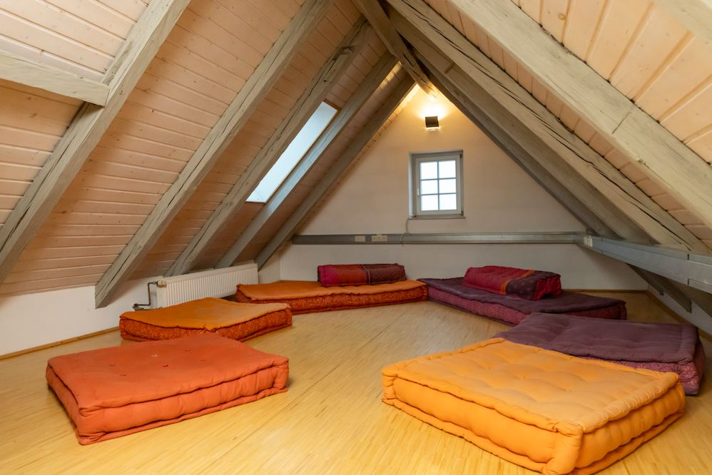
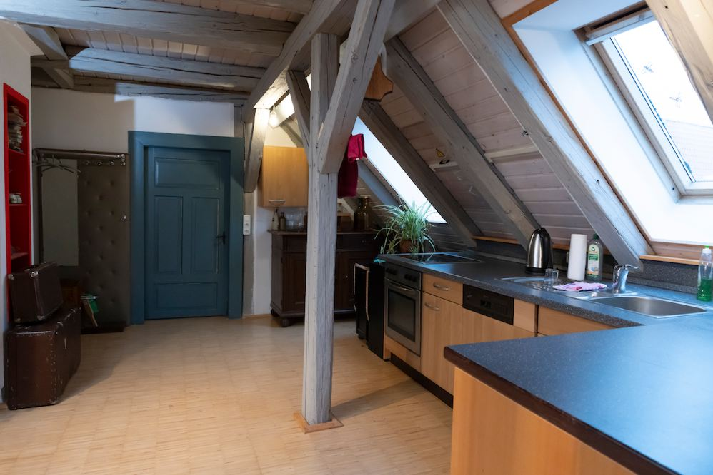

Kreativraum Vogelherdhöhle
- Besonderheiten: eigenet sich u. a. für Yogastunden, Meditationseinheiten
- Größe: ca. 15 m²
- Raumaustattung: große Bodenkissen vorhanden (s. Bilder), Parkettboden, Internet- und Telefonanschluss
- Gemeinschafts- & Außenbereich: Mitbenutzung der Gemeinschaftsküche im 2. OG möglich, insgesamt zehn Parkplätze am Haus vorhanden, Winterdienst wird übernommen, weitere Parkmöglichkeiten in der Nähe
- Vermietung: flexibel (tage-, wochen-, monatsweise)
- Preis: auf Anfrage. Eine Orientierung bietet unsere Preisübersicht.
